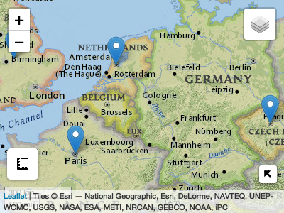

AOI helps create reproducible, programmatic boundaries for analysis and mapping workflows. The package targets five main use cases:
1. Term based geocoding
AOI uses tidygeocoder as a backend for term-based geooding and Wikipedia APIs. If you have more ridgid addresses tidygeocoder is great!
Foward (from name to location)
Places
geocode(c('Colorado State University', "University of Colorado", 'NOAA'))
#> # A tibble: 3 × 5
#> request score arcgis_address x y
#> * <chr> <int> <chr> <dbl> <dbl>
#> 1 Colorado State University 100 Colorado State University -105. 40.6
#> 2 University of Colorado 100 University of Colorado -105. 40.0
#> 3 NOAA 100 Noaa -94.8 29.3Addresses
# Address with POINT representation
geocode('500 Linden St, Fort Collins, CO 80524', pt = TRUE)
#> Simple feature collection with 1 feature and 5 fields
#> Geometry type: POINT
#> Dimension: XY
#> Bounding box: xmin: -105.0665 ymin: 40.59362 xmax: -105.0665 ymax: 40.59362
#> Geodetic CRS: WGS 84
#> # A tibble: 1 × 6
#> request score arcgis_address geometry x y
#> <chr> <int> <chr> <POINT [°]> <dbl> <dbl>
#> 1 500 Linden St, For… 100 500 Linden St… (-105.0665 40.59362) -105. 40.6Events
# Single events
geocode(event = 'D-day')
#> Simple feature collection with 1 feature and 2 fields
#> Geometry type: POINT
#> Dimension: XY
#> Bounding box: xmin: -0.6 ymin: 49.34 xmax: -0.6 ymax: 49.34
#> Geodetic CRS: WGS 84
#> request title geometry
#> 252854 D-day Normandy landings POINT (-0.6 49.34)
# Multi-location events with BBOX
(harvey = geocode(event = 'Hurricane Harvey', bb = TRUE))
#> Simple feature collection with 9 features and 5 fields
#> Geometry type: POLYGON
#> Dimension: XY
#> Bounding box: xmin: -96.81531 ymin: 3.931777 xmax: -56.01361 ymax: 32.83577
#> Geodetic CRS: WGS 84
#> request
#> 1 Hurricane+Harvey
#> 2 Hurricane+Harvey
#> 3 Hurricane+Harvey
#> 4 Hurricane+Harvey
#> 5 Hurricane+Harvey
#> 6 Hurricane+Harvey
#> 7 Hurricane+Harvey
#> 8 Hurricane+Harvey
#> 9 Hurricane+Harvey
#> all
#> 1 Windward Islands
#> 2 Suriname
#> 3 Guyana
#> 4 Nicaragua
#> 5 Honduras
#> 6 Belize
#> 7 Cayman Islands
#> 8 Yucatán Peninsula
#> 9 Southern and Eastern United States (especially Texas and Louisiana)
#> request.1 score
#> 1 Windward Islands 100.00
#> 2 Suriname 100.00
#> 3 Guyana 100.00
#> 4 Nicaragua 100.00
#> 5 Honduras 100.00
#> 6 Belize 100.00
#> 7 Cayman Islands 100.00
#> 8 Yucatán Peninsula 100.00
#> 9 Southern and Eastern United States (especially Texas and Louisiana) 93.73
#> arcgis_address
#> 1 Windward Islands
#> 2 Suriname
#> 3 Guyana
#> 4 Nicaragua
#> 5 Honduras
#> 6 Belize
#> 7 Cayman Islands
#> 8 Yucatan Peninsula
#> 9 Southern Ave & Eastern Ave, Dallas, Texas, 75209
#> geometry
#> 1 POLYGON ((-96.81531 3.93177...
#> 2 POLYGON ((-96.81531 3.93177...
#> 3 POLYGON ((-96.81531 3.93177...
#> 4 POLYGON ((-96.81531 3.93177...
#> 5 POLYGON ((-96.81531 3.93177...
#> 6 POLYGON ((-96.81531 3.93177...
#> 7 POLYGON ((-96.81531 3.93177...
#> 8 POLYGON ((-96.81531 3.93177...
#> 9 POLYGON ((-96.81531 3.93177...
mapview::mapview(harvey)
Reverse (from location to term)
geocode_rev(c(37, -119))
#> # A tibble: 1 × 3
#> address x y
#> <chr> <lgl> <lgl>
#> 1 <NA> NA NA2. Consistent queries for domestic (USA) and international boundaries:
State / Multi-state
aoi_get(state = c("CO", "UT"))
#> Simple feature collection with 2 features and 14 fields
#> Geometry type: MULTIPOLYGON
#> Dimension: XY
#> Bounding box: xmin: -114.0529 ymin: 36.99246 xmax: -102.0415 ymax: 42.0017
#> Geodetic CRS: WGS 84
#> state_region state_division feature_code state_name state_abbr name
#> 1 4 8 1779779 Colorado CO Colorado
#> 2 4 8 1455989 Utah UT Utah
#> fip_class tiger_class combined_area_code metropolitan_area_code
#> 1 <NA> G4000 NA <NA>
#> 2 <NA> G4000 NA <NA>
#> functional_status land_area water_area fip_code
#> 1 A 268418796417 1185716938 08
#> 2 A 213355072799 6529973239 49
#> geometry
#> 1 MULTIPOLYGON (((-105.155 36...
#> 2 MULTIPOLYGON (((-111.5078 4...USA Counties
aoi_get(state = "TX", county = "Harris")
#> Simple feature collection with 1 feature and 14 fields
#> Geometry type: MULTIPOLYGON
#> Dimension: XY
#> Bounding box: xmin: -95.96073 ymin: 29.49734 xmax: -94.90865 ymax: 30.17061
#> Geodetic CRS: WGS 84
#> state_region state_division feature_code state_name state_abbr name
#> 1 3 7 1383886 Texas TX Harris
#> fip_class tiger_class combined_area_code metropolitan_area_code
#> 1 H1 G4020 288 <NA>
#> functional_status land_area water_area fip_code
#> 1 A 4421068052 182379558 48201
#> geometry
#> 1 MULTIPOLYGON (((-95.21642 2...World Countries
aoi_get(country = "Ukraine")
#> Simple feature collection with 1 feature and 168 fields
#> Geometry type: MULTIPOLYGON
#> Dimension: XY
#> Bounding box: xmin: 22.08561 ymin: 45.29331 xmax: 40.08079 ymax: 52.33507
#> Geodetic CRS: WGS 84
#> featurecla scalerank labelrank sovereignt sov_a3 adm0_dif level
#> 113 Admin-0 country 1 3 Ukraine UKR 0 2
#> type tlc admin adm0_a3 geou_dif geounit gu_a3 su_dif subunit
#> 113 Sovereign country 1 Ukraine UKR 0 Ukraine UKR 0 Ukraine
#> su_a3 brk_diff name name_long brk_a3 brk_name brk_group abbrev postal
#> 113 UKR 0 Ukraine Ukraine UKR Ukraine <NA> Ukr. UA
#> formal_en formal_fr name_ciawf note_adm0 note_brk name_sort name_alt
#> 113 Ukraine <NA> Ukraine <NA> <NA> Ukraine <NA>
#> mapcolor7 mapcolor8 mapcolor9 mapcolor13 pop_est pop_rank pop_year gdp_md
#> 113 5 1 6 3 44385155 15 2019 153781
#> gdp_year economy income_grp fips_10 iso_a2
#> 113 2019 6. Developing region 4. Lower middle income UP UA
#> iso_a2_eh iso_a3 iso_a3_eh iso_n3 iso_n3_eh un_a3 wb_a2 wb_a3 woe_id
#> 113 UA UKR UKR 804 804 804 UA UKR 23424976
#> woe_id_eh woe_note adm0_iso adm0_diff adm0_tlc adm0_a3_us
#> 113 23424976 Exact WOE match as country UKR <NA> UKR UKR
#> adm0_a3_fr adm0_a3_ru adm0_a3_es adm0_a3_cn adm0_a3_tw adm0_a3_in
#> 113 UKR UKR UKR UKR UKR UKR
#> adm0_a3_np adm0_a3_pk adm0_a3_de adm0_a3_gb adm0_a3_br adm0_a3_il
#> 113 UKR UKR UKR UKR UKR UKR
#> adm0_a3_ps adm0_a3_sa adm0_a3_eg adm0_a3_ma adm0_a3_pt adm0_a3_ar
#> 113 UKR UKR UKR UKR UKR UKR
#> adm0_a3_jp adm0_a3_ko adm0_a3_vn adm0_a3_tr adm0_a3_id adm0_a3_pl
#> 113 UKR UKR UKR UKR UKR UKR
#> adm0_a3_gr adm0_a3_it adm0_a3_nl adm0_a3_se adm0_a3_bd adm0_a3_ua
#> 113 UKR UKR UKR UKR UKR UKR
#> adm0_a3_un adm0_a3_wb continent region_un subregion
#> 113 -99 -99 Europe Europe Eastern Europe
#> region_wb name_len long_len abbrev_len tiny homepart min_zoom
#> 113 Europe & Central Asia 7 7 4 -99 1 0
#> min_label max_label label_x label_y ne_id wikidataid name_ar
#> 113 2.7 7 32.14086 49.72474 1159321345 Q212 أوكرانيا
#> name_bn name_de name_en name_es name_fa name_fr name_el name_he name_hi
#> 113 ইউক্রেন Ukraine Ukraine Ucrania اوکراین Ukraine Ουκρανία אוקראינה युक्रेन
#> name_hu name_id name_it name_ja name_ko name_nl name_pl name_pt
#> 113 Ukrajna Ukraina Ucraina ウクライナ 우크라이나 Oekraïne Ukraina Ucrânia
#> name_ru name_sv name_tr name_uk name_ur name_vi name_zh name_zht
#> 113 Украина Ukraina Ukrayna Україна یوکرین Ukraina 乌克兰 烏克蘭
#> fclass_iso tlc_diff fclass_tlc fclass_us fclass_fr fclass_ru
#> 113 Admin-0 country <NA> Admin-0 country <NA> <NA> <NA>
#> fclass_es fclass_cn fclass_tw fclass_in fclass_np fclass_pk fclass_de
#> 113 <NA> <NA> <NA> <NA> <NA> <NA> <NA>
#> fclass_gb fclass_br fclass_il fclass_ps fclass_sa fclass_eg fclass_ma
#> 113 <NA> <NA> <NA> <NA> <NA> <NA> <NA>
#> fclass_pt fclass_ar fclass_jp fclass_ko fclass_vn fclass_tr fclass_id
#> 113 <NA> <NA> <NA> <NA> <NA> <NA> <NA>
#> fclass_pl fclass_gr fclass_it fclass_nl fclass_se fclass_bd fclass_ua
#> 113 <NA> <NA> <NA> <NA> <NA> <NA> <NA>
#> geometry
#> 113 MULTIPOLYGON (((31.78599 52...USA and World Regions
World_asia = aoi_get(country = "Asia")
aoi_describe(World_asia)
#> type: POLYGON (47)
#> BBox Area: 101752122 [km^2]
#> Centroid: 85.79324 22.51263 [x,y]
#> Diminsions: 7617.139 4536.421 [width, height, in miles]
#> area: 31270884 [km^2]
#> Area/BBox Area: 30.73241 [%]
USA_south = aoi_get(state = "south")
aoi_describe(USA_south)
#> type: POLYGON (16)
#> BBox Area: 5360056 [km^2]
#> Centroid: -90.81484 32.51755 [x,y]
#> Diminsions: 1842.137 1120.732 [width, height, in miles]
#> area: 2399422 [km^2]
#> Area/BBox Area: 44.76487 [%]3. Creating flexible AOIs from locations and bounding dimensions.
Place Name and diminsions
# 100 square mile region around Longs Peaks
aoi_ext("Long Peaks", wh = 10)
#> xmin ymin xmax ymax
#> 33.852795 3.789964 33.852975 3.7901454. View and Draw
NOTE: The following functions require leaflet, shiny and leaflelt.extras. Since these are Suggested Dependencies you will need to install them yourself in warnings appear.
Sometimes it is useful to view the created AOIs. aoi_map offers a quickly formatted leaflet map (not all that dissimilar from mapview so this may retire).
AOI = geocode(geo = c("Paris", "Amsterdam", "Prague", "England"), pt = TRUE)
aoi_map(AOI, returnMap = TRUE)
Alternatively sometimes users need very specific AOIs that are not POINTs, bounding boxes, or fiat boundaries. For this AOI provides aoi_draw() which allows users to interactively draw an Area of Interest (AOI) using a shiny app. Once an object is drawn and the “Save AOI” button pressed, a new sf object called ‘aoi’ will appear in your environment.
aoi_draw()
Using the aoi_draw() interface
5. Programmatic way to interface with other R packages that require user defined AOIs or bounding boxes
The need for AOI’s is rampant in the r-spatial community. AOI plays nicely with the following non-exhaustive list helping users be to the meat of their utilities without getting hung up on boundary definition.
| package |
|---|
| ggmap |
| nhdplusTools |
| elevatr |
| terrainr |
| climateR |
| dataRetrivial |
| soilDB |
| nwmTools |
| FedData |
| hereR |
Please add more!
Installation:
remotes::install_github("mikejohnson51/AOI")Support:
AOI has been supported with funds from the UCAR COMET program (2018-2019) and the NSF Convergence Accelerator Project (2020).